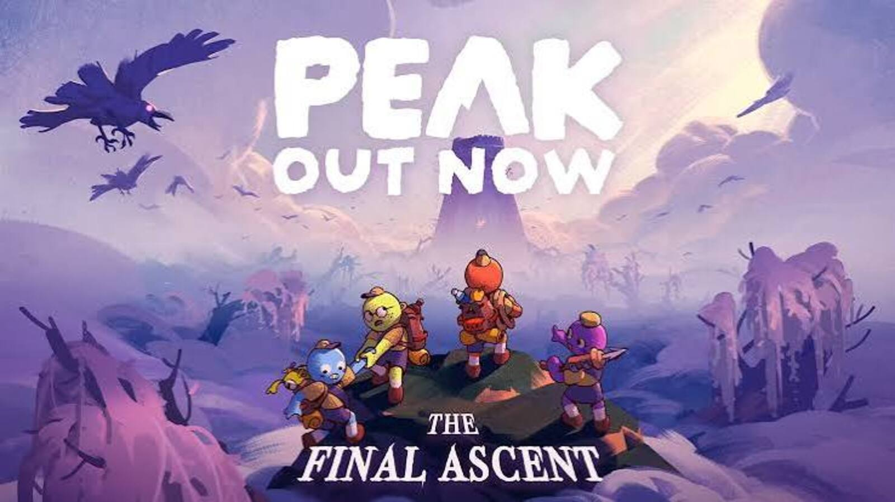
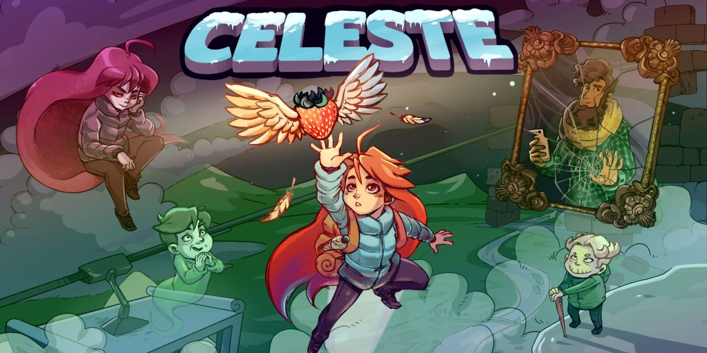
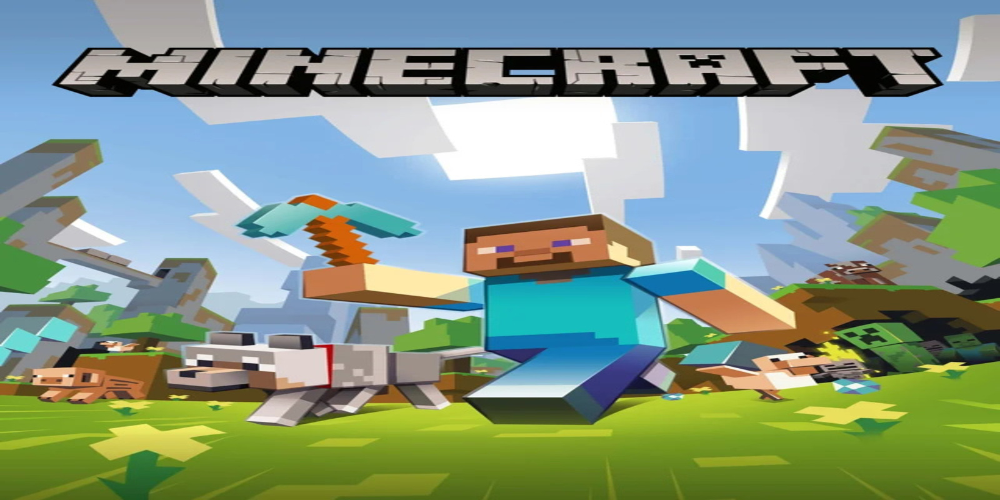
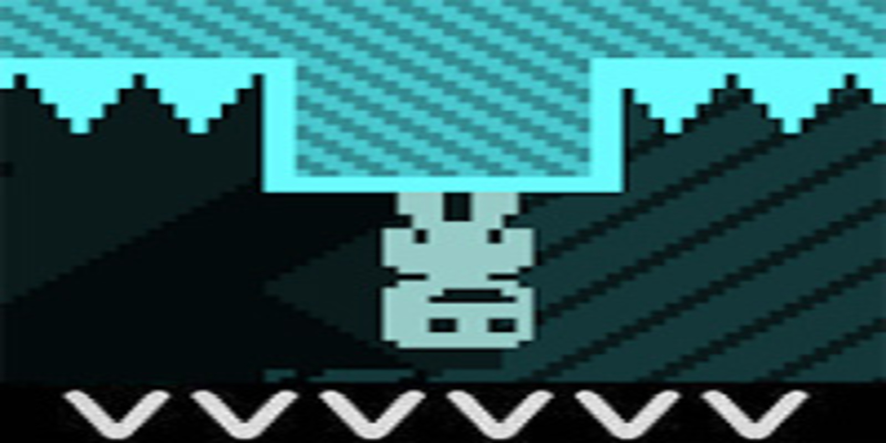

Introducción
Los videojuegos son mucho más que una forma de pasar el rato: son experiencias capaces de acompañarnos, desafiarnos y hacernos ver los problemas desde otro ángulo. A través de cuatro títulos muy diferentes entre sí, analizamos cómo el trabajo en equipo, la aceptación del fracaso y la libertad de construir nuestro propio camino dejan huellas que trascienden el juego.
Galería de imágenes




Minecraft
Minecraft es, en esencia, un espejo de la libertad y de la fragilidad humana. Con solo unos cuantos bloques digitales, el juego nos pone frente a una verdad sencilla: empiezas sin nada, pero puedes construirlo todo, sabiendo que en cualquier momento puedes perderlo en un segundo


Conclusión
Los videojuegos son mucho más que un simple entretenimiento; son el refugio moderno contra la soledad y un espacio para descansar. Lejos de ser una perdida de tiempo, este representa un escape temporal diseñada para rescatarnos de una realidad que a menudo nos satura o nos aísla.
Sobre Nosotros
Ingenieros en proceso